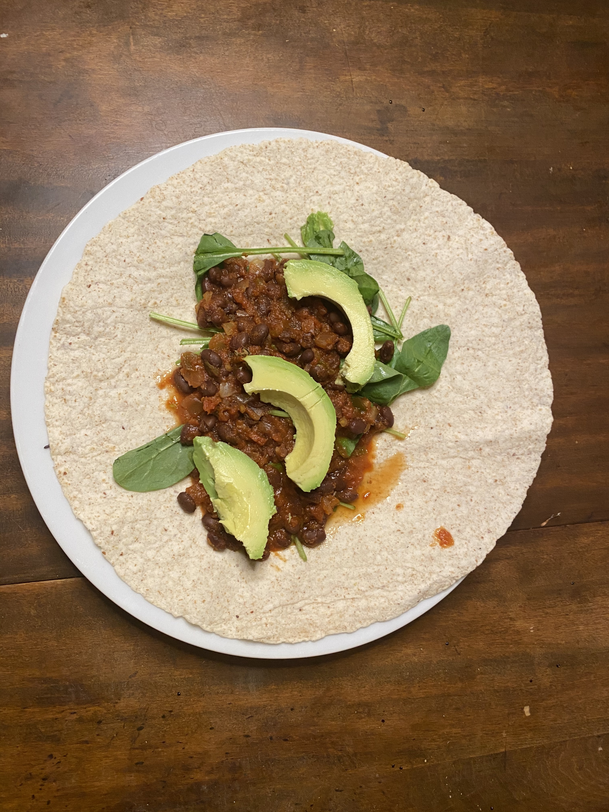

This semester I also decided to go vegan. I went vegan in an attempt to make myself cook food at home more often. I really did not like cooking for myself before I went vegan because I did not like touching raw meat. I also decided to go vegan for the health benefits. Before I went vegan I did a lot of research about how plant-based diets improve health, well-being, and athletic performance. I also decided to go vegan because I wanted to challenge myself to eat new foods. I always found myself buying the same thing at the grocery store every week. Going vegan has forced me to learn about using spices and cooking new foods. I do not think being vegan has been hard so far because I am not a picky eater. My favorite vegan meal is bean burritos because it is cheap and delicious.
